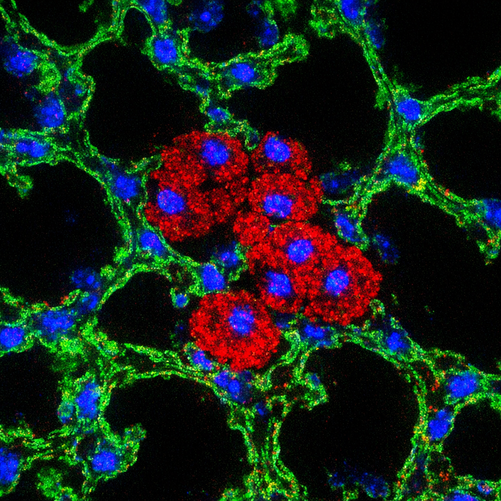
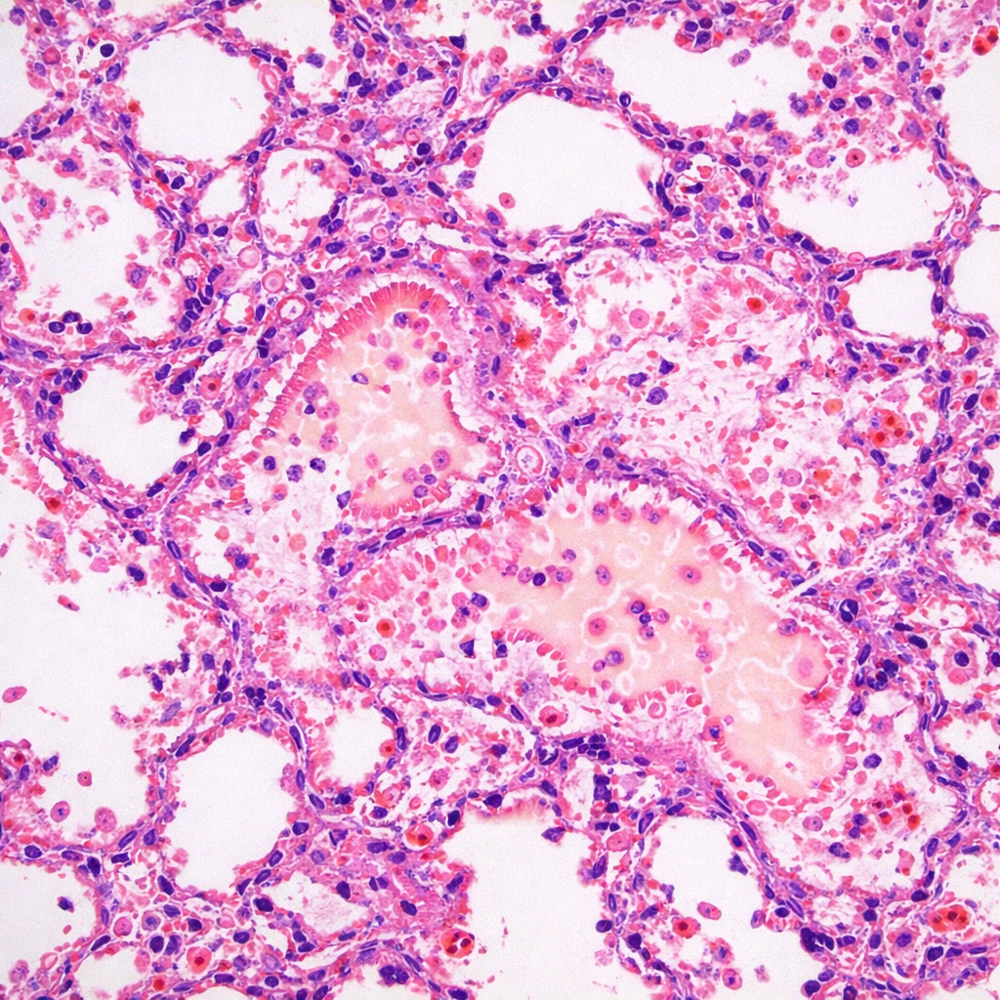
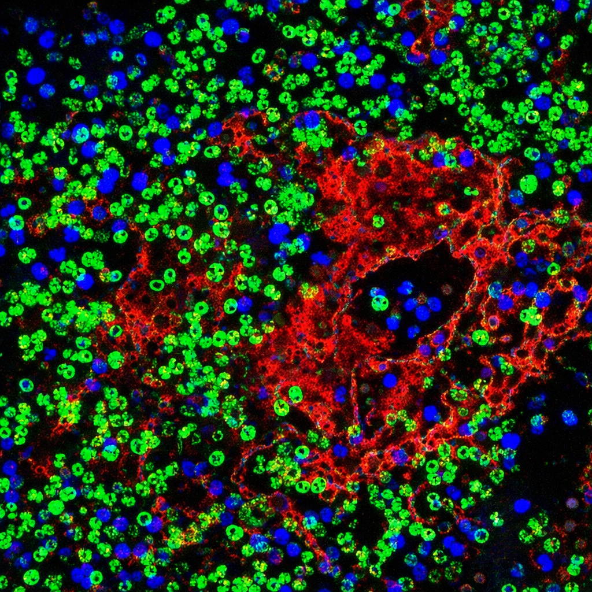
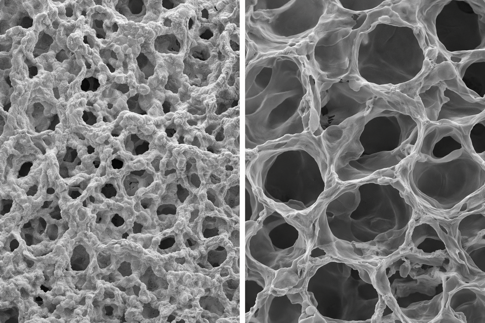

© 2026 Beata Kosmider Lab

Alveolar Type II Cell Biology | Lung Regeneration | Inflammation Research
We study the fundamental biology of primary alveolar type II (ATII) cells, which are essential for producing and secreting pulmonary surfactants. These cells also serve as progenitor cells that proliferate and differentiate into alveolar type I cells to repair the alveolar epithelium after injury.
Our research investigates the molecular mechanisms regulating ATII cell function, including surfactant protein expression, lipid metabolism, and the signaling pathways that control their regenerative capacity. Understanding these processes is critical for developing therapies that promote lung repair in diseases like ARDS and pulmonary fibrosis.

We investigate how exposure to harmful agents—including cigarette smoke, e-cigarette aerosols, bacterial and viral infections—causes ATII cell injury and impairs their ability to repair the alveolar epithelium.
Using both human and murine lung tissue, we identify the cellular and molecular pathways that lead to cell death, dysfunction, and failed regeneration. Our goal is to discover therapeutic targets that can restore normal repair mechanisms and prevent the progression of chronic lung diseases such as COPD and emphysema.

We analyze the inflammatory response and antioxidant defense systems in alveolar epithelial cells. Chronic inflammation and oxidative stress are key drivers of lung disease progression.
Our lab uses cellular, molecular biology, and biochemistry approaches to understand how these systems become dysregulated after injury. We are developing strategies to enhance antioxidant defenses and resolve inflammation, aiming to slow or prevent alveolar wall destruction.

Emphysema is characterized by the progressive loss of alveolar structure and permanent air space enlargement. Current therapies are limited, and there is an urgent need for treatments that slow or reverse alveolar destruction.
Our research focuses on identifying the key cellular mechanisms driving emphysema pathogenesis, including protease-antiprotease imbalance, oxidative stress, and failed ATII cell regeneration. We are testing novel therapeutic approaches to preserve alveolar structure and function.

© 2026 Beata Kosmider Lab